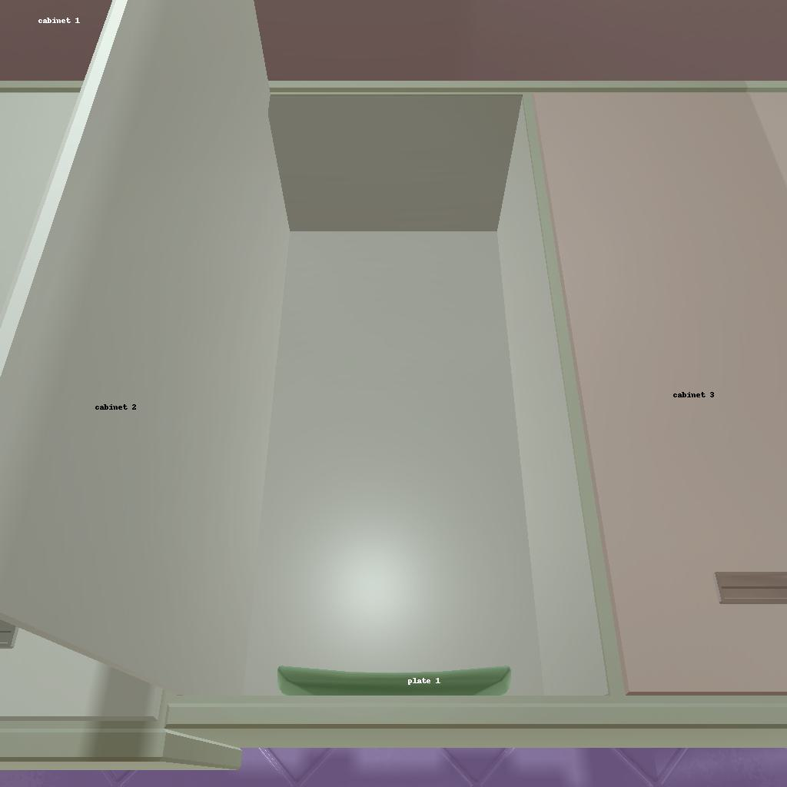

---------------------------------------------------------task: 21---------------------------------------------------------
--------------------------------------------------------------------------------------------------------------------------------------------------------------------
--------------------------------------------------------------------------------------------------------------------------------------------------------------------
Step:--------------------------------------------------------------------------13-------------------------------------------------------------------------------
----------------------------------------
VLM Prompt:
Image1:
Image2:
**Instruction**
1. Analyze the provided image to identify all visible household objects, focusing on those relevant to the task description "put a hot cup in countertop."
2. Use the analysis of the image and the task hint "The agent must find an object of the desired type, pick it up, go to a microwave, heat the object with the microwave, then find the correct location to place it, and put it down there. The agent does not need to use the microwave button or open the microwave to heat the object, and the agent just needs to do action that is "heat the object with the microwave"." to answer the question: what is the most reasonable action in the choices for the task description "put a hot cup in countertop"?
4. Decide and write the answer using the template: The answer is: (i): , where i is the real number. If there is no desired object in the image, search every place based on **Initial Observation** to find the object. And if no one is exactly correct, choose a similar answer.
**Initial Observation**
You are in the middle of a room. Looking quickly around you, you can see cabinet (1-6), microwave (1), countertop (1-2), coffeemachine (1), toaster (1), sink (1), sinkbasin (1), fridge (1)
**Answer Choices**
(1): go to cabinet 1
(2): go to microwave 1
(3): go to cabinet 4
(4): go to cabinet 5
(5): go to cabinet 6
(6): go to countertop 1
(7): go to coffeemachine 1
(8): go to toaster 1
(9): go to countertop 2
(10): go to sink 1
(11): go to sinkbasin 1
(12): go to fridge 1
(13): close cabinet 3
(14): take bowl 1 from cabinet 3
(15): take plate 1 from cabinet 3
(16): examine cabinet 3
**Answer**
Let's think step by step by following the instructions.
----------------------------------------
----------------------------------------
Original Response:
First, we need to find a cup to heat. In the images provided, we can see cabinet 3 is open, and there are objects labeled "plate 1" and "bowl 1." However, neither of these objects is a cup.
Following the Initial Observation, we must search every place to find the cup. Since the cup is not visible in the images, we proceed with the process of elimination. We can eliminate options related to cabinet 3 (13, 14, 15, 16) because we have already seen the inside of this cabinet, and there is no cup. We can also eliminate options related to the coffeemachine (7), toaster (8), countertops (6, 9), sink (10), sinkbasin (11), and fridge (12) because these do not typically store cups; they are not cabinets.
This leaves us with options related to cabinets 1, 4, 5, 6, and the microwave (2). Since the task is to put a "hot cup in countertop," we first need to find and heat the cup. We can't heat it without finding it first, so the microwave option (2) is not the immediate next step.
The most reasonable next action would be to search the remaining cabinets for a cup. Therefore, starting with the closest cabinet to continue the search would be logical.
The answer is: (1): go to cabinet 1.
----------------------------------------
----------------------------------------
>>> Refine Original VLM Response and Get Pure Action: go to cabinet 1
----------------------------------------
-----------------------------------------------------------------
Running time: 11.172616243362427 seconds
Total Money: 10.425320000000005
-----------------------------------------------------------------
-----------------------------------------------------------------
Text Observation:You arrive at loc 0. The cabinet 1 is open. On the cabinet 1, you see a bowl 1, and a plate 1.
-----------------------------------------------------------------
UNSUCCEED